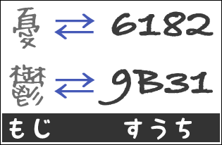
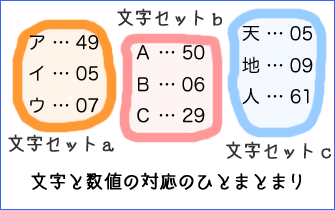
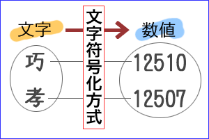
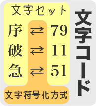
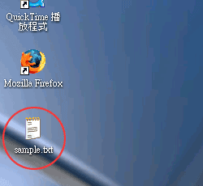
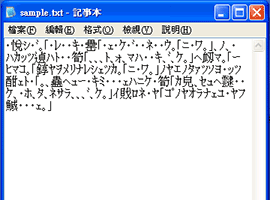
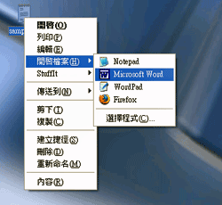
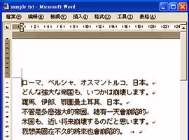
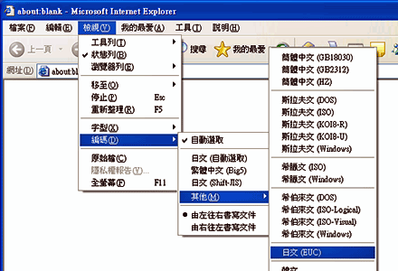

日文文書処理
文字コードについて
文字コードとは

わたしたちが使っているコンピュータでは、さまざまな文字を利用することができる。これは、ひとつひとつの文字に固有の数値が割り当てられているからである。コンピュータは、文字を数値に置き換えて処理しているのである。
しかし、文字と数値の対応に一定のルールがなければ、コンピュータの間で、データの共有ができなくなってしまう。そのために、文字と数値の対応を定めたきまりが、文字コードcharacter codeである（文字コード体系ともいう）。
- 文字コードcharacter code
- ひとつひとつの文字への数値の割り当てを定めたきまりのこと
また、文字コードは、文字セットcharacter setと文字符号化方式character encodingの組み合わせであるといえる。
文字セット
文字コードは、アルファベット、漢字、ハングルなど、特定の文字のまとまりに対して定められている。たとえば、ASCII（US-ASCII）は、アルファベットへの数値の割り当て方を定めたものである
特定の文字のまとまりに対する文字と数値の対応を、文字セットcharacter setという（文字集合、符号化文字集合、キャラクターセットともいう）。

一般に、文字セットは、日本語で使われる文字の文字セット、中国語で使われる文字の文字セットのように、言語ごとに作られている。
文字符号化方式

文字コードでは、文字に対する数値の割り当て方の規則（原理）が必要である。この規則を文字符号化方式character encoding (scheme)という（文字エンコーディングともいう）。
たとえば、EUCやUTF-8などは、文字符号化方式を示したものである。
文字セットと文字符号化方式

文字セットと文字符号化方式の組み合わせが、文字コードである。
ただし、「文字コード」の名前（呼び方）は、「文字符号化方式」と区別されないことも多い。また、「文字コード」という語が、「文字セット」と同じ意味で使われたり、「文字符号化方式」と同じ意味で使われることもあるので、注意が必要である。
文字コードの呼び方の例
| 言語 | 文字セット | 文字符号化方式 | 文字コードの呼び方 |
| *JIS X 0208を米MicroSoft社が独自に拡張したもの（IBM拡張文字とNEC特殊文字が含まれる） |
| 日本語 | JIS X 0208
JIS X 0213 | ISO-2022-JP | JISコード（JIS漢字） |
| Shift_JIS | シフトJIS（SJIS） |
| EUC | 日本語EUC（EUC-JP） |
| Microsoft漢字* | Shift_JIS | Windows-31J（ＭＳ漢字コード、CP932、MS932） |
| 多言語 | ISO/IEC 10646 | UTF-8 | Unicode（ユニコード） |
| UTF-16 |
| 繁体字中国語 | Big5 | Big5 | Big5 |
| CNS 1164 | EUC | 繁体字中国語EUC（EUC-TW） |
| 簡体字中国語 | GB 2312 | EUC | 簡体字中国語EUC（EUC-CN） |
| 英語 | ASCII | ASCII | ASCII（アスキーコード） |
日本語の文字コード
日本語の文字コードには、主に次の３種類のものがある。
- 1. JISコード（ジス・コード）
- 主に、電子メールで使われる。
- 2. シフトJIS（シフト・ジス）
- 主に、パソコンで使われる。また、日本語のウェブページでも多く用いられる。
- 3. 日本語EUC（にほんご・イーユーシー）
- 主に、UNIXで使われる。日本語のウェブページにも用いられる。
文字化けについて
文字化けとは
ひらがなや漢字が意味不明の文字や記号に変わってしまうことを文字化けという。
文字化けの主な理由は、次のようなものである。
- 本来のものとは別の文字コードで読み込んだ
- データからの情報の一部が欠落してしまった
- 文書の中に「機種依存文字」を使用している
- 適切なフォントがインストールされていない
別の文字コードでの読み込み
多くの場合、文字コードは、コンピュータ（ソフトウェア）が適切に設定（変換）するので、あまり気にする必要はない。
しかし、何かの理由で、本来のものとは別の文字コードで読み込んでしまうと、意味不明の文字や記号が表示されることになる（文字化け）。これは、主に次のような場合に起きる。
- テキストファイルを"Windows Notepad"（記事本）などのアプリケーションソフトで開くとき
- ウェブページを"Internet Explorer"などのウェブブラウザで表示するとき
テキストファイルの場合
たとえば、MicroSoft Windowsでは、テキストファイルのアイコンをダブルクリックすると"Windows Notepad"（記事本）で開くようになっている。しかし、"Windows Notepad"（記事本）が判別できる文字コードは多くない。そのため、システムと異なる言語の文書などはうまく開けないことも少なくない。
そのような場合は、文字コードの変換ソフト（コンバータ）を利用するか、別のアプリケーションで開く必要がある。たとえば、"Microsoft Word"ならば、"Windows Notepad"が開けないファイルもうまく開けるかもしれない。
Windows NotePadで開くと文字化けするテキストファイルも


右クリックから"Microsoft Word"で開くと正しく開ける


なお、すべての文字コードの間に互換性があるわけではないので、文字コードの変換ソフト（コンバータ）を利用するときには注意が必要である。
また、異なるOSでテキストファイルを交換したとき、改行コードの問題が生じることがある。たとえば、MS WindowsとMacintoshでテキストファイルを交換したときには、MS WindowsではMacintoshのテキストファイルの行がつながって見え、MacintoshではMS Windowsのテキストファイルの行が二重に改行されて見える（ことがある）。
もとのテキスト
行く川の流れは絶えずして、しかももとの水にあらず。
よどみに浮ぶうたかたは、かつ消えかつ結びて、久しく止とゞまりたる例なし。
世の中にある人と住家と、またかくの如し。
MS Windows → Macintosh
行く川の流れは絶えずして、しかももとの水にあらず。
よどみに浮ぶうたかたは、かつ消えかつ結びて、久しく止とゞまりたる例なし。
世の中にある人と住家と、またかくの如し。
Macintosh → MS Windows
行く川の流れは絶えずして、しかももとの水にあらず。よどみに浮ぶうたかたは、かつ消えかつ結びて、久しく止とゞまりたる例なし。世の中にある人と住家と、またかくの如し。
この場合も、文字コードの変換ソフト（コンバータ）を利用するか、別のアプリケーションで開く必要がある。たとえば、MS Windowsならば、"Microsoft Word"を使えば、Macintoshのテキストファイルも正しく開くことができる（はずである）。
ウェブページの場合
たとえば、「日本語EUC」のウェブページを「シフトJIS」として開いてしまうと、意味不明の文字や記号が表示されるだけである。
これは、
- "Internet Explorer"などのウェブブラウザが、文字コードの判別を誤った場合
- ウェブページやサーバが指定する文字コードが実際のページの文字コードと異なる場合
に起きる。
このときには、ウェブブラウザの文字コードの設定を正しく変更する必要がある。
ブラウザでの文字コードの設定の例（Internet Explorer中文版）

また、"Internet Explorer"（中文版）では、「自動判別」の設定になっているとき、文字コードがUTF-8の日本語ページを開こうとすると空白のページが表示される（何も表示されない）ことがある。このときも、ウェブブラウザの文字コードの設定を正しく変更する必要がある。
データの欠落
主に、日本語の電子メールに使われるのは、JISコード（ISO-2022-JP）である（最近では、Unicodeも普及してきている）。多くのメールソフトでは、日本語の電子メールの送信時に自動的にJISコードに変換されるようになっている。これは、シフトJISやEUC-JPが8bitのエンコードであるのに対して、JISコードが7bitのエンコードだからである。
電子メールは、英語を中心に発展したことから、7bitのエンコードが標準となっていた。現在でも、メールサーバmail serverの中には、7bitのコードしか適切に処理しないものがある。そのため、メールに8bitのコードを使うと、電子メールからデータの一部が欠落してしまうことがある。
メール送信時の設定などによって、シフトJISやEUC-JPでメールを送った場合には、文字化けするデータの欠落によって可能性がある。データの欠落による文字化けは、復元が困難である。電子メールが文字化けして、どうしても読めないときには、もう一度メールを送ってもらうしかない（送信時の設定を確認してもらった方がよい。本文を添付ファイルで送りなおしてもらう方法もある）。
また、電子メールの文字化けは、メール送信時のコード変換のエラーなどによっても起きる。この場合も、復元は困難なので、もう一度メールを送ってもらうことになる。
機種依存文字
特定のコンピュータやOSでしか表示できない文字を「機種依存文字」という。
どの文字が機種依存文字かは、使用する文字コードによって異なる。例えば、シフトJISでは、丸囲み数字やローマ数字は機種依存文字であり、異なる環境では文字化けする。ただし、Unicodeでは、丸囲み数字やローマ数字は機種依存文字ではない。
テキストに機種依存文字が使われている場合は、異なる環境で表示したときに、必ず文字化けする。また、機種依存文字の表示は、フォントによっても異なるので、同じOSでも表示が変わってしまうことがある。そのため、テキストに機種依存文字が含まれないようにした方がよいだろう。
いわゆる「半角カナ」（１バイトのかな文字）は、文字化けの原因となることがあるので、電子メールでは、できるだけ使わない方がよい。また、半角カナは、RTFなどの書き出しでも、問題となることがある。
適切なフォント
日本語、中国語、韓国語などの非アルファベット言語では、それぞれの言語のフォントがインストールされていないと、文字を正しく表示することができない。たとえば、繁体字中国語のフォントがインストールされていない環境では、Big5でのテキストは正しく表示できない。
なお、同じ文字でもフォントによって文字の形に違いがある場合がある。言語が異なる場合（たとえば、日本語の漢字を繁体字中国語のフォントで表示・印刷するとき）には気をつけなければならない（特に、人名に関しては思わぬトラブルになることがある）。
また、フォントの設定によっては、日本語のリッチテキストフォーマットのファイル（拡張子「.rtf」）がうまく開けないことがある。
たとえば、中国語版の"Microsoft Word"を使って日本語のリッチテキストフォーマットのファイルを書き出す場合、"ＭＳ明朝"や"ＭＳゴシック"などの一般的な日本語フォントに設定した方がよい。また、日本語のリッチテキストファイルが文字化けするときにも、フォントを"ＭＳ明朝"や"ＭＳゴシック"などに変えると読めることがある。